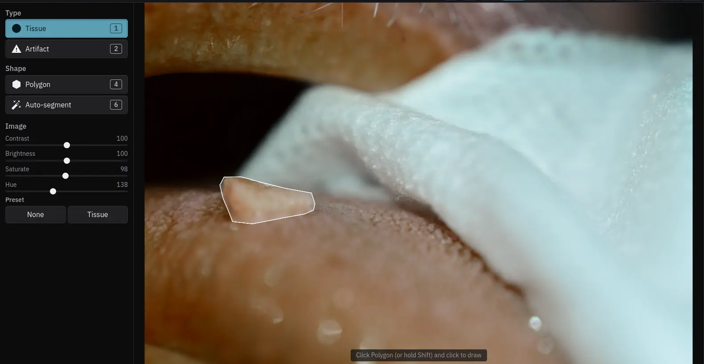
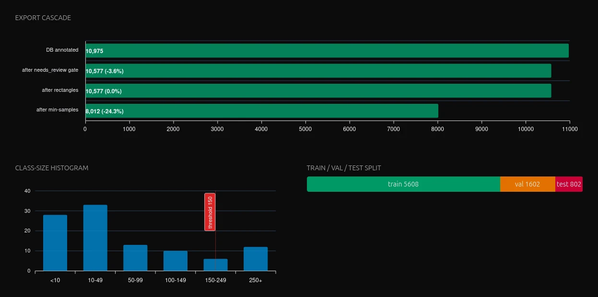
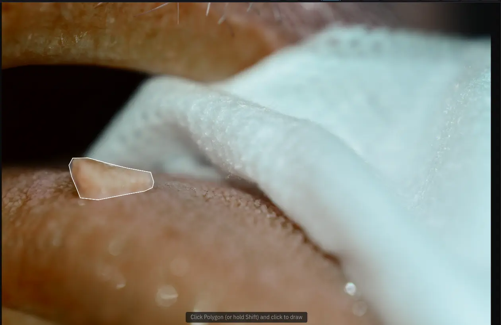

Oral pathology
imaging platform
Four services for one job: annotate clinical images against a controlled taxonomy, train a segmentation model, and return a case-level result to a clinician.

§ 01 — Context
Clinicians classify lesions by eye.
Stomatologists photograph lesions in the mouth and label them from memory. That label is slow to produce, inconsistent between clinicians, and hard to audit.
The platform makes that process measurable. A case arrives as photographs and comes back as a diagnosis with a confidence score, a view count, and the images behind it. Each step keeps its own record, so a result can be traced to the model run that produced it.
The taxonomy started at 95 ICD-10 classes. The production model uses 18. A class with too few examples teaches a model to be confidently wrong, so the 18 that survived are the ones with enough evidence to support a claim.

Jul–Oct 2025
Annotation tool
Core models, deep zoom, first production deploy, patient management.
Oct 2025–Feb 2026
Dataset work
Batches, uploads, YOLO export, a code review, and a quality pass.
Feb–Jun 2026
Model server
Training and evaluation CLI, FastAPI, the EXIF fix, the recall ceiling.
Mar–Oct 2026
Clinician app
The clinician app, the design system, the mobile capture flow, exports.
§ 02 — Constraints
What made it hard.
- One developer, four services. No handoff to an ML engineer, a designer, or an ops team. Nobody else owned the boundaries between them.
- Clinical data. Real patient photographs, authentication on every surface, and no identifiers in the exported dataset.
- One GPU. A training run held the card until it finished, so experiments had to be chosen carefully.
- Variable capture. Different cameras, lighting, and EXIF orientations. The data is not a benchmark set.
- The model must be allowed to say nothing. A confident wrong answer is worse than no answer. That requirement shaped the aggregation rules and the UI.
§ 03 — Architecture
Three services take requests. A fourth runs the deploy.
The annotation tool owns the data. The model server owns the weights. The clinician app owns the session and nothing else: no domain database, only a user table and a proxy. The deployment layer owns the machine they run on.
Two contracts connect the services. The dataset export (annotation tool → model server) is logged under a versioned dataset contract. The prediction schema (model server → clinician app) is mirrored between Pydantic models and PHP DTOs, with tests on both sides. Most of the expensive bugs were in the data those contracts pass.
How it was built. One developer and a lot of agentic tooling: Claude Code, parallel agents across the four repositories, vendor and custom skills. 1,629 commits. The number measures volume; the contracts and the tests show whether the agents helped. §05 keeps the three things that did not work.
§ 04 — Surfaces
What each service does
Annotation tool
The dataset comes from here
Clinicians work through assigned batches, draw polygons or boxes, and label each finding against the ICD-10 taxonomy. The ML-readiness screen shows the export cascade before anyone trains: how many images survive the minimum-sample filter, and which classes are about to disappear.
- Deep zoom on full-resolution photographs.
- Polygon, rectangle, and SAM 2 click-to-segment.
- Batches, roles, and per-entity policies.
- A dashboard that makes class imbalance visible before training.

Model server
Training, evaluation, serving
The stoma package runs the lifecycle: check the dataset, train, evaluate, compare predictions to ground truth, assess a run, export weights, and serve. Every model is a run with an ID, so a metric can always be traced back to the weights that produced it.
- Experiment and run model with lineage.
- Compare reports with IoU matching (an overlap score) and error images.
- 29 API endpoints, model hot-swap without a restart.
- Greek and English labels resolved at the wire boundary.
$ stoma data check --experiment yolo-min150-640px-bg-20260614
clean · 18 classes · 8,774 images
$ stoma train
$ stoma assess --latest
box mAP@50 0.508 · recall 0.496Fig. 04One CLI for the whole run lifecycle.
Clinician app
Case upload, aggregation, exports
Upload up to ten images as one case. The app forwards them to the ML service, aggregates detections across views, and only marks a condition present when it appears in two or more views. Results export to PDF and Excel.
- Case-level aggregation instead of per-image noise.
- Camera capture and quality checks on mobile.
- Explicit empty and no-detection states.
- A design system and a living pattern page.


Deployment
Proxy, backups, migrations
Containerised deploys from an operator workstation, an Apache reverse proxy, database backups, security headers, and migrations that are opt-in. The annotation tool has run in production since August 2025.
- Multi-stage images and a pinned compose project.
- Reverse proxy with rate limiting and hardened headers.
- Opt-in migrations, so a deploy cannot surprise the schema.
$ ./scripts/deploy.sh prod --migrate
$ docker compose -f docker-compose.prod.yml up -d
✔ app tier healthy · migrations applied · proxy reloadedFig. 07Deploy, in two commands.
§ 05 — Failures
Three things that went wrong.
Each one changed how I build.
7.1% of the dataset had rotated labels.
- Symptom
- Masks landed beside the lesion on portrait photographs. The model was learning from noise.
- Cause
- The annotation tool exported label coordinates against the raw image size. The browser draws annotations in the EXIF-applied frame (EXIF is the photograph's embedded orientation data). On iPhone portrait shots, the two frames are 90° apart.
- Fix
- Export against the transposed size, rebuild the dataset, re-run the baseline. Box mAP@50 went from 0.460 to 0.508; recall from 0.423 to 0.496.
754 of 10,575 images were affected. The compare report found it; the aggregate metric had not.
Recall stopped at 0.49.
- Symptom
- The model missed half the lesions. mAP looked respectable; recall did not.
- Attempts
- Class reweighting, a 1024 px retrain, label-space collapse, calibration, a frozen DINOv2 probe, and an RF-DETR A/B.
- Result
- All closed. RF-DETR produced 51 background false positives against YOLO's 12 on clean ground truth. The limit is the data, not the architecture.
The next lever is acquisition: more annotated images, especially for the weak classes.
The safety layer did nothing.
- Symptom
- Post-processing gates were meant to suppress bad predictions before they reached a clinician.
- Test
- ON/OFF A/B on 210 cases. The gates touched about 0.6% of detections.
- Result
- No net benefit. I removed the engine, the environment flag, the API fields, and the calibration loader.
I should have tested it before shipping it.
§ 06 — Evidence
What the model does
The current production model is a YOLO26l segmentation model at 640 px, trained for 250 epochs on 8,774 images across 18 classes. The numbers below are from the clean test split, after the EXIF fix. Box mAP@50 scores how closely a predicted box overlaps the true lesion, from 0 to 1.
Run yolo26l-seg_640_b32_lr0.005_e250_20260614_181629. Precision 0.570 at the validation threshold; 0.620 at the production operating point (conf 0.25), where recall is 0.455.
The ten-case product test
Ten patient folders were uploaded through the production UI on 3 November 2026. Ground truth comes from the clinic; predictions come from the model the app was serving that day.
| Case | Ground truth | Model output | Best | Views | Tier | Verdict |
|---|---|---|---|---|---|---|
| 01 PAT-16K8CB | Leukoplakia ΛΕΥΚΟΠΛΑΚΙΑ | Leukoplakia | 94.1% | 4/4 | High | Correct |
| 02 PAT-0397TF | Oral lichen planus ΟΜΑΛΟΣ ΛΕΙΧΗΝΑΣ | Oral lichen planus | 71.5% | 2/6 | Medium | Correct |
| 03 PAT-6HJW2Y | Mucocele ΒΛΕΝΝΟΚΥΣΤΗ | Mucocele | 93.4% | 3/3 | High | Correct |
| 04 PAT-FNFFCB | Stevens–Johnson syndrome ΣΥΝΔΡΟΜΟ STEVENS–JOHNSON | Oral lichen planus | 89.1% | 2/3 | High | Wrong |
| 05 PAT-6MJINX | Fibroma ΙΝΩΜΑ | Papilloma | 87.9% | 3/3 | High | Wrong |
| 06 PAT-0IHZKA | Chronic traumatic ulcer ΧΡΟΝΙΟ ΤΡΑΥΜΑΤΙΚΟ ΕΛΚΟΣ | None above threshold | 58.1% | 0/2 | Low | No diagnosis |
| 07 PAT-AIU7FA | Aphthous ulcers ΑΦΘΕΣ | None above threshold | 77.3% | 0/4 | Low | No diagnosis |
| 08 PAT-9KWBZA | Geographic tongue ΓΕΩΓΡΑΦΙΚΗ ΓΛΩΣΣΑ | Oral lichen planus | 93.1% | 3/4 | High | Wrong |
| 09 PAT-85QDRL | Leukoplakia ΛΕΥΚΟΠΛΑΚΙΑ | None above threshold | 0.0% | 0/2 | Low | No diagnosis |
| 10 PAT-N71M0B | Traumatic ulcer + leukoplakia ΕΛΚΟΣ + ΛΕΥΚΟΠΛΑΚΙΑ | Leukoplakia | 93.2% | 4/4 | High | Correct (partial) |
Ten cases cannot give an error rate. What they show is the three failure modes: a confident wrong class, a refusal to choose, and a missed lesion. Four correct, three wrong, three abstentions.
§ 07 — Next